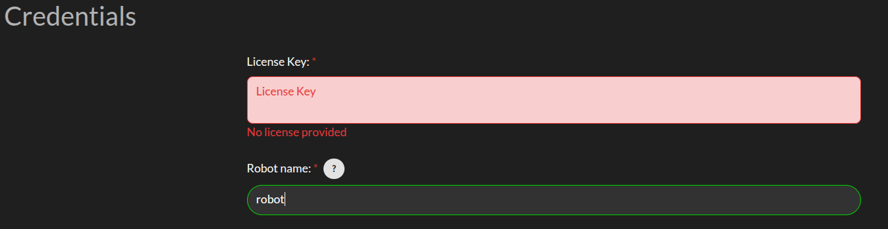

Credentials
The Credentials page appears as follows: When entering a license key, meta information about the license will be displayed. This information includes the expiration date, issue date, and the cloud option associated with the license. If the license key is invalid, an error message will be displayed.
{kind=link}
Credentials: 3Laws will provide a license key based on the version of Supervisor that has been purchased/downloaded. The license key incorporates an expiration date. If a trial license was obtained, the expiration date is 60 days from the request date for the trial.
Robot Name: This identifier will be different for each robot where Supervisor is installed. It should contain a name you can use to identify an individual robot. Note that each license of Supervisor is only valid for a single platform/robot.
ROS TF worldframe: This is the world frame used by the robot. It is used to transform the robot’s pose to the world frame. The default value is world.
Advanced Settings > Project to SE2: By default, the system is assumed to operate in 3-dimensional space. Projecting to SE2 assumes that the vehicle is traveling on a flat surface or that its travel distance is small enough that earth curvature effects are not significant. When mapping from 3-dimensional space to 2-dimensional space, the system is assumed to have zero roll and pitch while being placed on the ground. No rotational velocities or acceleration are assumed around roll and pitch, and zero vertical velocity and acceleration are assumed. This will also map the received state to the SE2 state space. An information modal is available to describe the mapping.
Advanced Settings > Process niceness: The computational priority of the Supervisor node can be set through the “niceness” parameter, where -20 would set it as very high priority and +19 would be very low priority. A niceness of zero is recommended. (Please review documentation on setting priority in Linux using “nice” for a deeper explanation.)
Advanced Settings > Retimestamp policy: is used to add or correct the timestamp on log messages that seem to have an incorrect one. Leaving the timestamp unchanged is also an option.
Advanced Settings > Upload log to 3laws robotics cloud: For debugging purposes, 3Laws creates a log file when Supervisor is started. The file is stored in ~/.3laws/logs. Enabling this option allows 3Laws to provide better support with troubleshooting if there is a problem.